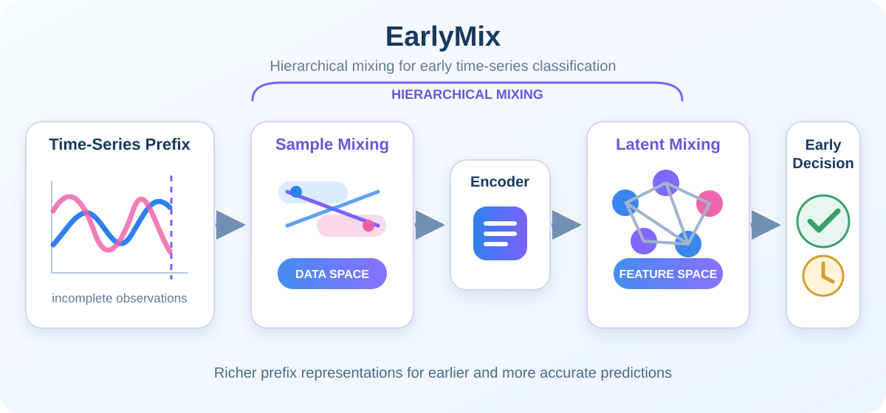
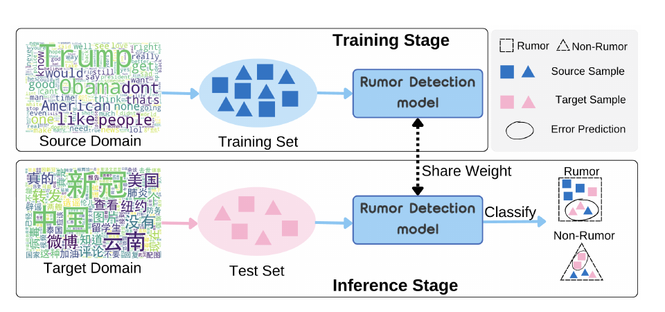

Shuguo Hu (胡树国)
I am a Ph.D. student in a joint program between the
Shenzhen Loop Area Institute (SLAI) and
My current research focuses on Embodied AI and World Models. Previously, I worked on time-series analysis and social media analysis. My goal is to promote the development of social productive forces. |

|
News
• 09/2026 I was invited to the |
Selected Publications |

|
Synergizing LLMs with Global Label Propagation for Multimodal Fake News Detection
Shuguo Hu, Jun Hu, Huaiwen Zhang ACL 2025 Main Long Paper arXiv / code GLPN-LLM combines LLM-generated pseudo-labels with a global label propagation mechanism for multimodal fake news detection. By propagating reliable label information across text-image news samples, it strengthens detection performance on benchmark social media datasets. |
|
 |
EarlyMix: Hierarchical Mixing for Early Time Series Classification
Shuguo Hu, Jun Hu, Junwei Lv, Huaiwen Zhang ICME 2025 paper / code EarlyMix uses hierarchical mixing in both the sample and latent spaces to enrich incomplete time-series prefixes. This produces more informative and robust representations for earlier, more accurate classification. |
|
 |
Cross-domain Rumor Detection via Test-Time Adaptation and Large Language Models
Yuxia Gong, Shuguo Hu, Huaiwen Zhang EMNLP 2025 Main Conference, Oral paper / PDF T2ARD combines multi-level self-supervised graph adaptation with LLM-generated pseudo-labels to improve cross-domain rumor detection. It achieves state-of-the-art performance across four widely used cross-domain datasets. |
Open-Source Projects |

|
Awesome-Time-Series-Papers
TSCenter — Open-source repository GitHub / stars (1.1k) Awesome-Time-Series-Papers is a curated repository of recent time series papers and code from top AI venues. It helps readers quickly follow new work across forecasting, anomaly detection, classification, and time-series foundation models. |
|
Haoleme
HaolemeApp — Open-source Android app GitHub / PyPI / ReadNote / stars (156) Haoleme is an Android app for monitoring long-running commands on your computer or servers from your phone. Launch tasks with the |

|
RAG-on-Graphs (RGL)
PyRGL — Open-source Python toolkit GitHub / stars (111) RAG-on-Graphs is a Python toolkit for retrieval-augmented generation on graph-structured data. It is designed to connect large language models with graph reasoning, graph retrieval, and practical downstream knowledge applications. |
Professional Services
• Program Committee Member, CIKM 2026 Workshops. |
Honors & Awards
• 2026 Outstanding Graduate, Inner Mongolia University (Top 4%). |
|
Let’s Connect: Interested in Embodied AI or World Models? Feel free to reach out for a coffee chat. Together, let’s learn, grow, and promote the development of social productive forces. |
|
Thanks to Jon Barron and Yixuan Li for sharing the source code for this website template. |